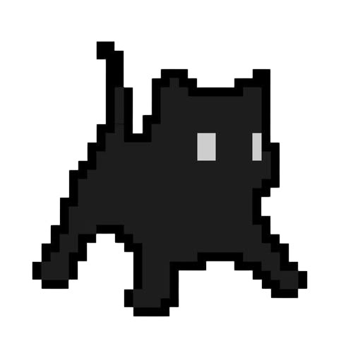

Estudiante
Marlyng Elizabeth
Miranda Navarrete
Sobre mí
Hola, mi nombre es Marlyng, aunque las personas cercanas a mí suelen llamarme Mar de cariño. Tengo 21 años y cumplo años el 31 de marzo. Actualmente, estoy cursando el último año de la carrera de Ingeniería de Sistemas.
He estudiado inglés desde los 13 años y considero que tengo un buen dominio del idioma, especialmente al hablarlo. Para seguir practicándolo y mejorar mis habilidades, suelo escuchar música, ver series y leer libros en inglés. Mis géneros favoritos son las series de detectives y de suspenso. Además, mi artista favorita es Taylor Swift, por lo que algunas de sus canciones me han ayudado a ampliar mi vocabulario y mejorar mi comprensión del idioma. También he realizado cursos complementarios, como Power BI y Excel avanzado.
Uno de mis pasatiempos favoritos es ir al gimnasio, actividad que he mantenido durante los últimos tres años. Además de disfrutarla, considero que es una forma de cuidar de mi salud.
Por otro lado, amo a los gatos, especialmente a aquellos que tienen la cola peluda. No hay nada que me haga más feliz que encontrarme con uno que se deje acariciar.
Finalmente, puedo decir que me gusta mucho mi carrera, especialmente el área del diseño, en la que espero desarrollarme profesionalmente en un futuro cercano.
Intereses y habilidades
- Diseño
- Power BI
- Excel avanzado
- Inglés
- Gimnasio
- Series de detectives y suspenso
- Taylor Swift
- Gatos